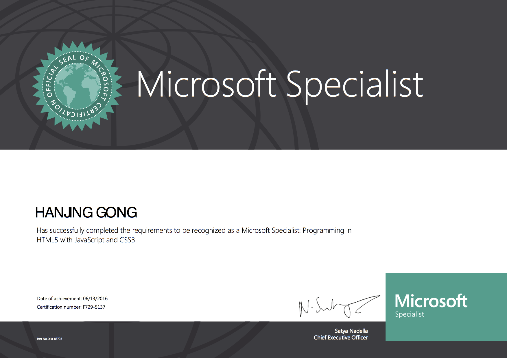

姓 名：龚汉金
信仰：佛教
性别：男
出生年月：1987.09.06
民族：壮
政治面貌：群众
联系方式：0063-9063726586
电子邮件:richardgong1988@gmail.com
期望从事职位： 资深node.js开发工程师
开源贡献:
blog:https://coderwall.com/richardgong1987
github:https://github.com/richardgong1987
nodejs高级编程视频教程：
https://www.youtube.com/playlist?list=PLsdWTv8SAAr7_ufM68jgykoOc5WvK97kb
MDN MOZILLA教程:https://developer.mozilla.org/en-US/profiles/richardgong1987
对一些开源项目有一定的代码贡献和bug跟进,如typedefined,ionic3.x

专业技能
算法和数据结构能力
熟悉常见算法,如:估价算法,回朔算法,递归算法,启发式算法,排列组合算法
熟悉常见数据结构,如:红黑树数据结构,二叉树数据结构,散列数据结构,螺旋数据结构,链表数据结构
通讯协议知识
HTTP协议:精通http协议,对http协议有深入理解
TCP/IP协议:理解TCP/IP协议,了解使用TCP/IP
UDP协议:理解UDP协议,了解使用UDP协议
node知识面:
熟悉docker容器的部署,移植,配置。 熟悉nodejs TDD开发
熟悉typescript,ES6新语法体系,熟悉typescript,ES6应用的各种细节。精通typescript,ES6面向对象编程
熟悉node.js核心模块,如http,fs,cluser,os,path熟悉他们的各种应用细节,熟悉在核心模块下建立的开源模块源码
熟悉node.js在linux端的部署和运维,熟悉node.js和nginx进行集群而达到负载均衡,熟悉使用webpack进行项目框架
熟悉node.js与memecaced, redis,mongodb的集成开发
有扎实的javascript基础,精通node,javascript原生编程,熟悉javascript常用见游戏算法，常见游戏数据结构，精通javascript面向对象编程,熟悉javascript设计模式,熟悉nodejs服务开发 熟悉第三方框架运用和设计原理,如,express,koa,ejs,nunjunk.能轻松自定义业务框架.
express方面:透彻的解读过express源码,熟悉express架构原理,及源码,了解express中间件
koa方面:透彻的解读过koa源码,熟悉koa架构原理,及源码,了解koa的中间件
Ionic3.x方面,熟悉使用Ionic3.x开发, cordova客户端打android,ios包
熟悉canvas游戏开发.
angular4.x方面,熟悉使用angular4.x开发
jquery方面:透彻的解读过jquery源码,熟悉jquery架构原理.,事件机制原理,熟知sizzle选择器原理及思想.
java知识面:
有扎实的java基础,和，javaweb基础,精通java oop面向对象程序设计,java设计模式,精通http协议,熟练应用http协议,了解,TCP通讯协议
- (1)熟悉javaweb servlet的应用,了解其源码及其原理
- (2)熟悉struts2应用及其原理
- (3)熟悉应用spring及其原理
- (4)熟悉应用hibernate
unix/linux shell知识面:
- (1)有比较扎实的shell编程基础，一解决常用的shell需求，了解linux系统操作与维护
SQL知识面:
- 1精通mysql增删改查操作。熟悉mysql性能优化,mysql管理,熟悉mangodb,redis nosql数据库操作
- 2.熟悉oracle增删改查操作。
c知识面:
基本了解c语言基础，能c语言开发一些简单应用。
其它知识面:
- (1)了解andriod客户端开发，了解一些ios开发，熟悉使用cordova进行ios,android的混合开发
- (2)精通 git下的版本控制,项目组织,仓库建设与管理。自动化部署
- (3）熟练使用maven管理项目和配置
- (4)熟悉nigix服务器使用与配置。对其源码有一定的了解
- (5）对hadoop有一定的了解。对其设计原理和源码有一定的研究
语言能力
（1）精通英语的听说读写，长年在英语国家的全英语环境下工作和生活
（2）精通汉语的听说读写
工作经历及案例
2015-3-至今，菲律宾某软件外包公司 , 职位:andrord,ios,ipad html5,java全栈工程师（兼项目经理）,职责:java,node.js服务端开发,前端架构设计;java,node,使用loopback进行服务端开发
汇报对象:公司总监
工作描述：
项目名： 某游戏平台
应用到的计算机语言：java,javascript,nodejs
主要成就：引入新技术栈（如：cordova)，完成手机app玩法开发，文档整理，app打包。平均单个项目完成周期：一个月
2013-6-2014-7, 携程计算机中心, 职位:andrord,ios webapp前端开发,职责:andrord,ios手机端webpp框架开发,webapp前端业务开发 ,app hybrid混合开发; 汇报对象:开发经理
工作描述：
项目名：携程门票，打车等频道hybrid开发,国际机票，国内机票html5开发
应用到的计算机语言：html5,javascript,java,nodejs
应用到的框架：backbone,zepto,underscore，require
- 1， 根据产品PRD，并结合公司给的restfull服务端给的数据接口和api描述，进行前端数据请求，,webapp前端业务开发 ,app hybrid混合开发; ，json数据处理，容错等
- 2， 公司前端业务框架开发，组件，小工具等
主要成就：完成携程国际机票项目，国内机票项目，门票订购项目，火车票项目，攻略项目，周边游项目。自由行项目，酒店项目等一系列携程业务的开发。平均单个项目完成周期：一个月
2010-8-2013-5，群硕软件开发（上海）有限公司，职位:ipad web,node应用程序前端开发。职责：通过后台提供的api进行前端和后台的交互。 汇报对象:项目经理
工作描述:
项目名：SAP care circle
应用到的计算机语言：html5,javascript,nodejs,java
应用到的框架：backbone,jquery, require
根据mockup描述，结合，客户（SAP）给的api,实现mockup所描述的业务逻辑进行webapp前端业务开发
主要成就：完成SAP外包项目之care circle。平均单个项目完成周期：8个月
教育经历
- 7-2011.7 威讯教育，.net软件工程师
- 2007.9-2010.6 上海科技学院
所获国际认证
International Certificate
Microsoft Certified Professional

Microsoft Specialist

自我评价:
团队合作精神强；专业知识过硬，对自己的专业有浓厚的兴趣。对工作认认真真，勤勤恳恳，有大型网络系统集成经验。社交能力强，具有优秀的组织和协调能力。在学习中，注重理论与实践的结合，已具备了相当的实践操作能力，可独立学习和工作。